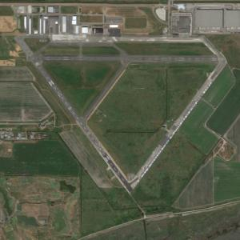

Circuit
Objective
To teach:
- How to fly a circuit pattern
Motivation
When/Why:
- proper circuit procedure, touch&go, stop&go, first solo
Threshold Knowledge Test
Essential background Knowledge

- Standard (Rectangular pattern & height 1000ft AGL & Left turns) & non-standard circuit (CFS)
- What is boundary bay’s circuit pattern and height?
- Is it standard or non-standard circuit pattern?
- Where do we find this information? CFS
Procedures

- Communication:
- Who (ATC, Aircraft)
- Where
- What
- Run-up
- Crew Briefing
- Type of takeoff
- Runway in use
- Rotation speed/ climb out speed
- Go/no go decision point (1000 foot marker, runway lights, windsock etc.)
- Emergency
- On the runway (check any malfunction /check static power 2280-2380RPM)
- Airborne – glide -> carb heat on -> land straight ahead or shallow turns
- Circuit height – glide -> carb heat on -> return to runway
- Taxi to holding short line
(hold short, line up and wait, cleared for take-off, delay, no delay)
- Take-off
- Line-up
- Full power (check RPM 2280-2380)
- Maintain straight (visual reference & control yaw)
- Rotate – Vr (50kts) (back pressure & nose on the horizon)
- Climb at Vy (67kts)
- Crosswind turn at 400ft (check traffic)
- Level off at 800ft
- A- cruise
- P -2100RPM for Cessna 152
- T- trim
- Downwind
- Pre-landing check (L->R)
- Call (who, where, what, runway number)
- 45° from the aiming point(shoulder check), turn base
- P – 1500RPM
- A – 65kts
- Flaps 20°
- T – trim
- Base (high or low, fast or slow)
- Final – go/ no go decision height 200ft (If approach is not stabilized (ASI & Glide path & centerline), go around)
- Landing
- Flare (round out) (when the ground rush toward you)
- Cruise attitude (look end of the runway)
- Nose up attitude (if the gap between the nose and the horizon is getting bigger) (main gear touch down first then nose gear touch down)
- Control
- Touch & go
- R->L ( Flaps up, mixture rich, full throttle, carb heat off)
Safety
- Traffic spacing (ATC will assign you a number)
- Any emergency (I have control)
- All turns max 20°bank (otherwise I have control)